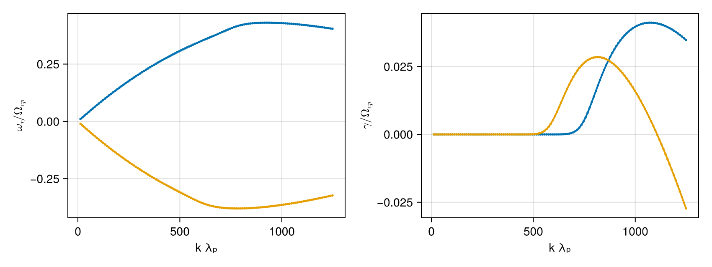

Ion cyclotron waves from a proton core-beam
Counter-propagating ion cyclotron waves excited by a proton core-beam distribution. Both proton populations are drifting bi-Maxwellians with T⊥ > T∥; the combined anisotropy and beam drift destabilize forward- and backward-propagating ICWs with unequal growth rates.
Reference: Case 6 in Guo et al. (2026, arXiv:2606.14439)
using VlasovMaxwellDispersion
using VlasovMaxwellDispersion: isgrowing
using CairoMakiePlasma setup
SI parameters, normalized to the proton gyrofrequency ωcp; velocities in units of c. Current closure is satisfied by the two proton drifts (n_c v_c + n_b v_b ≈ 0); electrons are isotropic and at rest.
const c0 = 2.99792458e8
qe = 1.602176634e-19;
mp = 1.67262192369e-27
eps0 = 8.8541878128e-12
B0 = 7.5e-7
me = 5.447e-4 * mp
nc, nb, ne = 2.53e9, 2.17e9, 4.7e9
Tcz, Tcp = 20.0, 100.0
Tbz, Tbp = 48.0, 170.0
Te = 50.0
vdc, vdb = -2.87e-4, 3.33e-4
wcp = qe * B0 / mp
Pi2(n, m) = n * qe^2 / (eps0 * m) / wcp^2
vth(T, m) = sqrt(2qe * T / m) / c0
plasma = (
NormalizedSpecies(1.0, Pi2(nc, mp),
Maxwellian(; vth_para=vth(Tcz, mp), vth_perp=vth(Tcp, mp), vd=vdc)),
NormalizedSpecies(1.0, Pi2(nb, mp),
Maxwellian(; vth_para=vth(Tbz, mp), vth_perp=vth(Tbp, mp), vd=vdb)),
NormalizedSpecies(-mp / me, Pi2(ne, me),
Maxwellian(; vth_para=vth(Te, me))),
)(NormalizedSpecies{Float64, Separable{Gaussian{Float64, Nothing}, Gaussian{Float64, Float64}}}(1.0, 849663.6708023186, Separable{Gaussian{Float64, Nothing}, Gaussian{Float64, Float64}}(Gaussian{Float64, Nothing}(0.0004616901395500871, nothing), Gaussian{Float64, Float64}(0.0002064741073150718, -0.000287))), NormalizedSpecies{Float64, Separable{Gaussian{Float64, Nothing}, Gaussian{Float64, Float64}}}(1.0, 728762.9113205657, Separable{Gaussian{Float64, Nothing}, Gaussian{Float64, Float64}}(Gaussian{Float64, Nothing}(0.0006019702936426549, nothing), Gaussian{Float64, Float64}(0.00031986831162172637, 0.000333))), NormalizedSpecies{Float64, Separable{Gaussian{Float64, Nothing}, Gaussian{Float64, Float64}}}(-1835.8729575913349, 2.8977906776627216e9, Separable{Gaussian{Float64, Nothing}, Gaussian{Float64, Float64}}(Gaussian{Float64, Nothing}(0.013988041555272406, nothing), Gaussian{Float64, Float64}(0.013988041555272406, 0.0))))Seedless survey
Parallel propagation, k·λₚ ∈ [0.02, 1] with λₚ = c/ωpp built from the total proton density.
kunit = sqrt(Pi2(ne, mp)) # k·λₚ → k c/ωcp
region = (-0.55 - 0.1im, 0.55 + 0.06im)
geom = CartesianSweep(kz=(0.01:0.008:1.0) .* kunit)
sol = solve(DispersionProblem(plasma, region, geom))SurveySolution(retcode=Saturated, 39 roots, 50593 evals, 0.97 s)Dispersion diagram
fig = Figure(size=(850, 320))
axr = Axis(fig[1, 1]; xlabel="k λₚ", ylabel=L"ω_r / Ω_{cp}")
axi = Axis(fig[1, 2]; xlabel="k λₚ", ylabel=L"γ / Ω_{cp}")
dispersion_diagram!((axr, axi), filter(isgrowing, sol))
fig
This page was generated using Literate.jl.